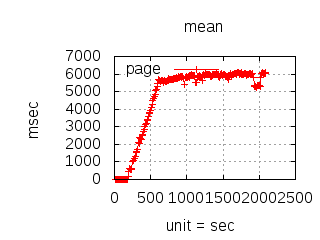
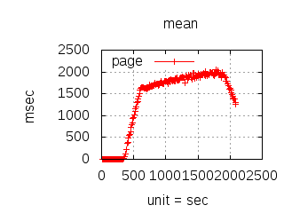
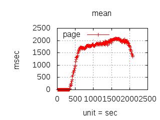

Frequently Asked Questions
version 2.0.6
last updated on June 21st 2023
1 - Introduction to CloudI
- 1.1 - Why is it named "CloudI"?
- 1.2 - How is CloudI pronounced?
- 1.3 - How does CloudI compare to other "Clouds"?
- 1.4 - How does CloudI compare to other open source messaging?
- 1.5 - What is CloudI?
- 1.6 - On what Operating Systems does CloudI run?
- 1.7 - Is Commercial support available for CloudI?
- 1.8 - Is CloudI really free?
- 1.9 - Who develops CloudI?
- 1.10 - Can I use CloudI as a Private Cloud?
- 1.11 - Can I use CloudI as an Online Service?
- 1.12 - What CAP theorem guarantees does CloudI provide?
- 1.13 - Does CloudI provide an implementation of the Actor Model?
- 1.14 - Does CloudI support REST?
- 1.15 - Does CloudI provide a Service-Oriented Architecture (SOA)
- 1.16 - Does CloudI provide a Microservice Architecture?
- 1.17 - Is CloudI Reactive?
- 1.18 - Does CloudI support Sagas?
- 1.19 - Why doesn't CloudI integrate with ProductX?
2 - Learning about CloudI
- 2.1 - Web Pages
- 2.2 - Mailing List
- 2.3 - Internet Relay Chat (IRC)
- 2.4 - RSS Feeds
- 2.5 - Twitter
- 2.6 - Presentations
- 2.7 - Articles
- 2.8 - Reporting Bugs
- 2.9 - Code of Conduct
3 - CloudI Installation Guide
- 3.1 - Overview
- 3.2 - Installation Options
- 3.3 - OS X Installation
- 3.4 - Running CloudI
- 3.5 - Configuration
4 - General Questions
- 4.1 - How do I integrate external software with CloudI?
- 4.2 - How do I control CloudI dynamically?
- 4.3 - How do I use Publisher/Subscriber messaging?
- 4.4 - How do I use Remote Procedure Calls (RPC)?
- 4.5 - How do I create Web Services?
- 4.6 - Does CloudI support WebSockets?
- 4.7 - How do I use Access Control Lists (ACLs)?
- 4.8 - How do I Migrate a Service from a Failed or Failing Node?
- 4.9 - Can I use Regular Expressions with Service Names (URLs)?
- 4.10 - How do Service Name Patterns work?
- 4.11 - Is the CloudI API thread-safe?
- 4.12 - How can CloudI requests take advantage of cache coherency, minimum network latency, and any logical grouping?
- 4.13 - Why not just use Erlang directly?
- 4.14 - What is a null response (How do timeouts occur)?
5 - Migrating to CloudI
- 5.1 - Performance Considerations
- 5.2 - Scalability Considerations
- 5.3 - Stability and Fault Tolerance Considerations
- 5.4 - Integration Considerations
- 5.5 - Load Testing
6 - Services
- 6.1 - ATS Service Implementation
- 6.2 - C/C++ Service Implementation
- 6.3 - Erlang Service Implementation
- 6.4 - Go Service Implementation
- 6.5 - Haskell Service Implementation
- 6.6 - Java Service Implementation
- 6.7 - JavaScript/node.js Service Implementation
- 6.8 - OCaml Service Implementation
- 6.9 - Perl Service Implementation
- 6.10 - PHP Service Implementation
- 6.11 - Python Service Implementation
- 6.12 - Ruby Service Implementation
- 6.13 - Rust Service Implementation
- 6.14 - HTTP Integration
- 6.15 - Service Fault Tolerance
- 6.16 - Service Monitoring
7 - Troubleshooting
- 7.1 - Why does CloudI stop shortly after being started?
- 7.2 - Why is CloudI making my Linux machine slow?
- 7.3 - Why does my container or guest VM installation of CloudI have problems?
- 7.4 - How can I control the CPU utilization of CloudI?
1 - Introduction to CloudI
1.1 - Why is it named "CloudI"?
A Cloud is more dynamic than a 3 dimensional Grid and is more ubiquitous than the legend of Beowulf, so it is easy to understand why computing Clouds are the next generation distributed systems. The relevant connotations the word Cloud contains are: dynamic, supervision, intermingle, and points (i.e., point clouds). Any computing Cloud should offer dynamic configuration, should supervise processes in a fault-tolerant way, offer easy integration and should support an arbitrarily large number of processes (respectively). This project offers Cloud functionality facilitated by Erlang.
CloudI has an "I" suffix for several connotations: cloudy, one, interface, and independence. CloudI is referred to as "A Cloud as an Interface" because a light-weight interface facilitates Cloud functionality. The interface supports multiple programming languages and is called the CloudI API. CloudI supports private cloud development and deployment, so only one Cloud is necessary for Cloud functionality with implicit security. CloudI is also able to facilitate online services and offers extreme connection scalability.
1.2 - How is CloudI pronounced?
As "cloud-e" /klaʊdi/ (think: Cloud Erlang).
1.3 - How does CloudI compare to other "Clouds"?
Hypervisor "Clouds"
Hypervisor "Clouds" are the most popular type of Cloud because any legacy source code can be put into an image (or container) to reduce the resources required. The Hypervisor has existed since 1965 when software was used on the IBM 360/65 to emulate an IBM 7080 with computation time split between the separate modes. Modern Hypervisors provide Operating System virtualization to more fully utilize hardware resources. Using virtualization can provide easier management of a Monolithic Architecture so the source code's limitations can be managed without software development and are instead an operations concern.
CloudI as a “Programming Model for Cloud Computing”
CloudI was classified as a "Programming Model for Cloud Computing" in the book: Chandrasekaran, K. "Essentials of Cloud Computing". Chapman and Hall/CRC, 2014. ISBN 978-1-4822-0543-5 (p198-199). While the book does have various errors, it is a significant effort to classify all the forms of Cloud Computing. CloudI use does require software development for using the CloudI API which allows CloudI to function as an application server and messaging bus with the developed source code isolated within a service. However, CloudI usage can exist with or without virtualization, offering both development and deployment flexibility.
CloudI does not require using a particular online service and can be deployed without an Internet connection on an airgap network if security is required. Scalability and fault tolerance are both provided by CloudI's usage of the Erlang programming language. Scalability is a natural gain with CloudI's Erlang concurrency which reduces the amount of power and hardware necessary for concurrent processing.
1.4 - How does CloudI compare to other open source messaging?
| CloudI (core) | ZeroMQ | Apache Zookeeper | Apache Kafka | RabbitMQ | |
| CAP Theorem | AP | AP | CP | CA | CA |
| Netsplits do not cause data loss | X | X | X | ||
| In‑memory transactions for minimum latency and maximum concurrency | X | ||||
| Uniquely identifies transactions | X | X | X | X | |
| Brokerless communication for minimum latency | X | X | |||
| Publish/Subscribe/RPC | X | X | X | X | |
| Protocol agnostic | X | ||||
| Complete transaction fault‑tolerance is provided within an application server | X | ||||
| Execution thread fault‑tolerance granularity | X | ||||
| Open Source license | MIT | LGPL | Apache | Apache | Mozilla Public |
CloudI is for Online Transaction Processing (OLTP) where a transaction may not require database storage (transient or cached data may allow the transaction to complete). The processing of in-memory transactions is important for keeping processing fault-tolerant so that errors are not persisted. To pursue fail-fast design of fault-tolerant systems, a transaction's data would only be persisted if it has passed all validation and business logic successfully.
CloudI provides fault tolerance on logic before a transaction is sent for extreme reliability. Other messaging methods are only able to timeout before the transaction is created without a way to escalate the failure using fault tolerance constraints.
The fault tolerance constraints that CloudI provides are:
| initialization timeout | for startup validation |
| transaction timeouts | for individual transactions |
| termination timeout | for deterministic shutdowns |
| MaxR/MaxT |
maximum restarts within a time period for any crashes within a
service instance process (a user-level or kernel-level thread) |
To make CloudI service requests durable (stored on the filesystem during the lifetime of the transaction), the service requests can be sent through cloudi_service_queue to handle either a destination failure or both a source failure and destination failure (based on the 'fault_isolation' configuration argument being either 'destination' or 'both').
To make CloudI service requests consistent across multiple service instances, the service requests can be sent through cloudi_service_quorum. The service request responses will be checked to ensure the responses pass the initialized quorum requirement and the service request will fail (providing a null response) if quorum is not obtained during the service request timeout period.
1.5 - What is CloudI?
Short Answer
A distributed application server that provides efficient messaging for many programming languages within a single service abstraction that is both scalable and fault-tolerant.
Shorter Answer
A rock-solid transaction processing system for flexible software development.
Shortest Answer
A Cloud at the lowest level.
Long Answer
CloudI is an implementation of Cloud functionality that can be developed and deployed publicly or privately. CloudI provides a simple server back-end that can be used for infrastructure development of data processing systems, event processing systems, web services, and combinations thereof. CloudI is a system that enforces RESTful development practices and provides a Service Oriented Architecture (SOA). CloudI services communicate with messaging that can be controlled by simple Access Control List (ACL) entries (to provide service communication isolation).
CloudI was architected to easily integrate with other services, software, and frameworks. The CloudI API provides a light-weight interface for creating services in ATS, C++/C, Elixir, Erlang, Go, Haskell, Java, JavaScript, OCaml, Perl, PHP, Python, Ruby, and Rust. By using CloudI, external software can become more scalable and fault-tolerant by utilizing CloudI's load balancing of CloudI requests. CloudI messaging enforces realtime constraints using timeouts, so that request failures can be handled locally within the service where they are most relevant. ACL entries explicitly allow or deny communication between services and are a simple method of isolating critical services from potentially volatile services. All CloudI API usage in languages other than Erlang receive the isolation of Operating System processes and are called external services. External services can utilize the CloudI API with any threading library to achieve greater scalability and reduce internal latency. The Erlang/Elixir CloudI API is used to create internal services which utilize light-weight Erlang processes. Examples of using the CloudI API are provided as integration tests or internal services.
The CloudI Service API provides dynamic configuration which is accessible from any allowed CloudI service (i.e., allowed based on the ACL entries). The CloudI Service API is accessible remotely by using Erlang terms or JSON-RPC over HTTP when using the cloudi_service_api_requests service with the cloudi_service_http_cowboy service. Examples of using the CloudI Service API are provided as separate integration tests.
1.6 - On what Operating Systems does CloudI run?
CloudI runs on UNIX-based operating systems like Linux (Ubuntu, etc.) and BSDs (FreeBSD, OpenBSD, NetBSD, macOS, etc.). CloudI development has primarily taken place on Ubuntu and other Operating Systems may not be completely tested yet.
Erlang must be able to run on the system for CloudI to function properly. So, checking Erlang support would be a good place to start if you are experimenting with a different Operating System. The information here will be updated as more Operating Systems are tested.
1.7 - Is Commercial support available for CloudI?
- Integration Development
- Operations Maintenance
Contact Michael Truog if you are interested in commercial CloudI support.
1.8 - Is CloudI really free?
CloudI is completely free. CloudI uses a MIT license which permits reuse for personal or commercial purposes. All external source code dependencies are also under a commercial-friendly license (MIT, Apache). Some dependencies used for building and testing use the GPL license (autoconf/automake/libtool, autoconf macros, and PropEr). For a more detailed look at the licenses of external dependencies, please check the src/external/README dependency list or the src/NOTICE license list.
1.9 - Who develops CloudI?
1.10 - Can I use CloudI as a Private Cloud?
Yes! CloudI provides everything for running a Cloud in isolation (i.e., without a connection to the Internet). For more details, please refer to "1.5 - What is CloudI?".
1.11 - Can I use CloudI as an Online Service?
Yes! CloudI accepts incoming HTTP traffic and can be easily extended to handle other incoming protocols. For more details, please refer to "1.5 - What is CloudI?".
1.12 - What CAP theorem guarantees does CloudI provide?
CloudI is an AP-type distributed system (guarantees of Availability and Partition tolerance). A Consistency guarantee (the guarantee not provided by CloudI) can be provided by a database that is used within a CloudI service. All CloudI service requests are transactional and a service request response may be used to confirm any state change. To understand consistency, as it relates to CloudI service fault tolerance, please refer to "6.15 - Service Fault Tolerance".
1.13 - Does CloudI provide an implementation of the Actor Model?
At a high-level, both the Erlang VM and CloudI implement the Actor Model when the term "Actor Model" is used loosely and the actors are allowed to queue the messages they receive, before the messages are processed.
The Erlang VM has been referred to as implementing the Actor Model despite the authors of Erlang being unaware of the Actor Model while implementing Erlang (e.g., the paper by Rajesh K. Karmani, Gul Agha, "Actors"). However, the Erlang VM does not provide the Actor Model when working with the original definition of the Actor Model as it was provided in Carl Hewitt, Peter Bishop and Richard Steiger. "A Universal Modular Actor Formalism for Artificial Intelligence". IJCAI'73. Instead, the Erlang VM provides processes which are most similar to "Fog Cutter Actors", based on the paper by Carl Hewitt, "Actor Model of Computation: Scalable Robust Information Systems". Unfortunately, no better term currently exists to refer to the design of Erlang processes, aside from a comparison to a "Fog Cutter Actor".
CloudI services are similar to Erlang processes and Erlang processes are used within the implementation of CloudI services. However, CloudI services are more dynamic:
- CloudI services use service names which match service name patterns. Service name patterns represent any number of CloudI service processes and service requests are automatically split between the available service processes, based on the sending service's destination refresh method. Erlang/OTP provides naming for Erlang processes, but the names must be unique, so only a one-to-one mapping is allowed.
- CloudI services can be used transparently within non-Erlang programming languages, but Erlang processes are limited to the Erlang VM.
- An asynchronous send within a CloudI service initialization can provide a response, which is not the case when using an Erlang process with an Erlang/OTP behaviour.
- Erlang process creation is statically defined as part of a release creation process which provides a single boot file used during the lifetime of the Erlang VM. CloudI services are always dynamically added (or removed) based on the CloudI configuration and the CloudI Service API usage.
- etc.
1.14 - Does CloudI support REST?
Yes! CloudI is a system that enforces RESTful development practices. A common misconception is that REST requires HTTP usage (see Roy Fielding's thesis to understand why this is not the case, Fielding, Roy T.; Taylor, Richard N. (May 2002), "Principled Design of the Modern Web Architecture" (PDF), ACM Transactions on Internet Technology (TOIT) (New York: Association for Computing Machinery) 2 (2): 115–150, doi:10.1145/514183.514185, ISSN 1533-5399). In CloudI, service requests operate with REST architectural constraints for better reliability and scalability than an ad-hoc brittle server would provide. For more details please refer to "1.5 - What is CloudI?".
1.15 - Does CloudI provide a Service Oriented Architecture (SOA)?
Yes! CloudI provides a Service Oriented Architecture (SOA) for flexible development, deployment, and maintenance of Enterprise Software Applications (ESA). CloudI provides an Enterprise Service Bus (ESB) which avoids latency overhead by avoiding serialization and conversions of protocols like Cap'n Proto, Google Protocol Buffers (ASN.1 or DFDL), HTTP REST (with JSON or XML), MessagePack, BSON, SOAP, JSON-RPC, XML-RPC, STOMP, CORBA, Sun RPC, etc. and instead relies on the exchange of binary data between heterogeneous services with the CloudI API.
CloudI service requests provide Request/Reply (RPC), Publish/Subscribe and Pipeline messaging (i.e., Flow-Based Programming (FBP)). CloudI supports both broker and broker-less service requests with a distributed fault-tolerant service directory (using "service names" and "service patterns") that can be locally cached (when using a "lazy" destination refresh method, instead of "immediate"). For more details please refer to "1.5 - What is CloudI?".
1.16 - Does CloudI provide a Microservice Architecture?
Yes! CloudI provides Microservices using light-weight messaging to facilitate CloudI service requests with the CloudI API. HTTP integration is provided by cloudi_service_http_cowboy (with other protocol integration relying on other CloudI services). The service memory footprint is kept small by relying on Erlang processes for their light-weight messaging (Erlang processes have been referred to elsewhere as "Nanoservices").
The main requirements of a Microservices Architecture (MSA) are:
- Services must be easy to replace
- Services are organized based on capabilities
- Services can be implemented with heterogeneous technology transparently
- All Service entities are equal rather than hierarchical (a property enforced by Inversion of Control (IoC) in a microservices framework)
CloudI services satisfy these requirements and are more fine-grained than monolithic SOA services (many CloudI services can be used within a single application rather than requiring an application be a service).
Using Erlang processes to provide a service abstraction allows all service requests to be exchanged in a common way with external programming language integration requiring only a thin interface (an implementation of the CloudI API). The CloudI API imposes no contention on the extreme concurrency the Erlang VM provides with CloudI's Erlang process integration. For more details please refer to "1.5 - What is CloudI?".
1.17 - Is CloudI Reactive?
Yes! CloudI is Reactive due to the scalability and fault tolerance provided by Erlang combined with the REST requirement of being stateless for service requests to provide event-driven, scalable, resilient and responsive CloudI services.
To be specific, CloudI is an example of Functional Reactive Programming (FRP), with CloudI service requests referred to as "signals" and each service request handling function execution referred to as "events". CloudI service request sends occur with a FRP "push-based" system implementation.
To keep functional semantics in any programming language that utilizes the CloudI API, separate function arguments are used for each datum within the data of a service request when the service request handling function is called (with the function arity as 9 in Java, Perl, PHP, Ruby, 10 in Python, 11 in ATS, Erlang/Elixir, Go, Haskell, OCaml, Rust, 13 in C++ and 14 in C, where arities higher than 9 are due to data handling details specific to the programming languages). Using a relatively high arity count does initially make developers feel uncomfortable due to common Object-Oriented design considering it a bad code-smell (e.g., "Refactoring: Improving the Design of Existing Code" by Martin Fowler et al. (Reading, MA: Addison-Wesley, 1999. Print) mentions long parameter lists on page 78-79) though it does help the developer naturally avoid side-effects as is commonly done in functional programming with immutable data. The use of a high arity count for CloudI service requests is part of a consistent interface that the CloudI API provides in each programming language (functions are common to all well-utilized programming languages while objects are not).
When a subscribed callback function is called with the CloudI service request data, the individual values are the most recent values. For example, the timeout parameter in the service request is automatically decremented based on the time that has elapsed before getting to the function call. There are 3 constant parameters: the request type (asynchronous or synchronous), the transaction id used to identify the service request, and the source process identifier that may receive the service request response, though all other parameters can be changed with a call to forward the service request to a new callback function execution. For example, the service name pattern may automatically change with a new callback function execution even if the same service name is used for the forward, due to the dynamic nature of service name pattern subscriptions. The execution time spent within the callback function is automatically decremented from the timeout value used for the return or forward if the 'request_timeout_adjustment' service configuration option is set to true (and the timeout value is not manually modified).
For more details please refer to "1.5 - What is CloudI?".
1.18 - Does CloudI support Sagas?
Yes! Sagas are easy to develop using CloudI. Sagas were first described in the paper Hector Garcia-Molina and Kenneth Salem. "Sagas". SIGMOD'87. Sagas have become a more prominent concept as microservice development has become more popular due to the need to manage the complexity of long-lived microservice transactions.
Typically, two approaches to Sagas is described:
- Events/Choreography
- Command/Orchestration
Either approach is possible in a CloudI service, though Sagas development prefers the Command/Orchestration approach to avoid abstract complexity that leads to implementation and maintenance difficulties that are common with the Events/Choreography approach.
An Events/Choreography CloudI service implementation would rely on subscribe use in each service, for each event that needs to be received (it would be best with a unique event for each receive to track the transaction logic and decouple the receive from the concurrency of each service). The service would use forward to transfer the control of a transaction to a different service and any additional transactions may be sent using send_async or send_sync until the final transaction in the Saga returns a response.
A Command/Orchestration CloudI service implementation would centralize the core Saga logic in a single CloudI service that uses send_async or send_sync to use any services necessary with separate transactions in the Saga. Transactions in these other services could be joined together by using forward to transfer control of the transaction to the next service. The core Saga logic would be based on the responses to the separate transactions and would end the Saga by returning a response.
With CloudI services providing transactions as a core feature while managing the fault-tolerance and scalability of each service independently, the resulting CloudI service business logic is kept simple and easy to maintain. CloudI services are able to avoid "boilerplate" source code that is required without CloudI when handling timeouts and the propagation of timeout failures, service failures or exceptions, service concurrency and other common development concerns.
1.19 - Why doesn't CloudI integrate with ProductX?
There are many possibilities for CloudI integration. If you know of a public product that you think should be integrated or if you need commercial support for a private product, contact Michael Truog.
2 - Learning about CloudI
2.1 - Web Pages
| Main Web Site: | https://cloudi.org |
| Source Code: | https://github.com/CloudI/CloudI |
| Releases: | https://osdn.net/pkg/cloudi/cloudi |
2.2 - Mailing List
| Email Address: | cloudi-questions@lists.osdn.me |
| Subscribe: | https://lists.osdn.me/mailman/listinfo/cloudi-questions |
| Archive: | https://lists.osdn.me/mailman/archives/cloudi-questions |
2.3 - Internet Relay Chat (IRC)
| IRC Server: | oftc.net |
| Chat Room: | #cloudi |
2.4 - RSS Feeds
| Development: | https://github.com/CloudI/CloudI/commits/develop.atom |
| Releases: | https://osdn.net/projects/cloudi/releases/rss |
2.5 - Twitter
| Development: | @cloudi_org |
2.6 - Presentations
| Version 1.5.0 | 2015 Chicago Erlang User Group (slides) |
| Version 1.3.2b | 2014 Erlang/Elixir Meetup Seattle (slides) |
| Version 1.2.5b | 2013 Hack and Tell Seattle (slides) |
| Version 1.0.0b | 2012 Open Source Bridge Unconference |
| Version 0.1.6a | 2011 ErLounge Meetup Vancouver BC (slides) |
| Version 0.1.5a | 2011 ErLounge Meetup SF Bay Area (slides) |
| Version 0.0.9a | 2010 Erlang Factory SF Bay Area (slides) (demo text) |
| Version 0.0.8a | 2009 Erlang User Conference (video) (slides) |
2.7 - Articles
| Bringing Erlang's Fault Tolerance to Polyglot Development | @Toptal Engineering Blog |
| Modernizing Legacy Software: A Case Study Using Erlang and CloudI (integration source code) | @Toptal Engineering Blog |
2.8 - Reporting Bugs
| Bug Reports: | https://github.com/CloudI/CloudI/issues/new |
| Mailing List: | cloudi-questions@lists.osdn.me |
If you are unsure whether you have found a bug, please send an email to the mailing list or utilize the IRC chat room. Otherwise, you can easily enter a bug report for the problem by using the online form. If you are unable to provide information about the problem publicly, specify the information is private in an email to Michael Truog.
2.9 - Code of Conduct
To ensure there are no barriers to CloudI development for any developers who want to get involved, a Code of Conduct was adopted:
Contributor Covenant Code of Conduct
Our Pledge
In the interest of fostering an open and welcoming environment, we as contributors and maintainers pledge to making participation in our project and our community a harassment-free experience for everyone, regardless of age, body size, disability, ethnicity, gender identity and expression, level of experience, nationality, personal appearance, race, religion, or sexual identity and orientation.
Our Standards
Examples of behavior that contributes to creating a positive environment include:
- Using welcoming and inclusive language
- Being respectful of differing viewpoints and experiences
- Gracefully accepting constructive criticism
- Focusing on what is best for the community
- Showing empathy towards other community members
Examples of unacceptable behavior by participants include:
- The use of sexualized language or imagery and unwelcome sexual attention or advances
- Trolling, insulting/derogatory comments, and personal or political attacks
- Public or private harassment
- Publishing others' private information, such as a physical or electronic address, without explicit permission
- Other conduct which could reasonably be considered inappropriate in a professional setting
Our Responsibilities
Project maintainers are responsible for clarifying the standards of acceptable behavior and are expected to take appropriate and fair corrective action in response to any instances of unacceptable behavior.
Project maintainers have the right and responsibility to remove, edit, or reject comments, commits, code, wiki edits, issues, and other contributions that are not aligned to this Code of Conduct, or to ban temporarily or permanently any contributor for other behaviors that they deem inappropriate, threatening, offensive, or harmful.
Scope
This Code of Conduct applies both within project spaces and in public spaces when an individual is representing the project or its community. Examples of representing a project or community include using an official project e-mail address, posting via an official social media account, or acting as an appointed representative at an online or offline event. Representation of a project may be further defined and clarified by project maintainers.
Enforcement
Instances of abusive, harassing, or otherwise unacceptable behavior may be reported by opening an issue or contacting the project creator. All complaints will be reviewed and investigated and will result in a response that is deemed necessary and appropriate to the circumstances. The project team is obligated to maintain confidentiality with regard to the reporter of an incident. Further details of specific enforcement policies may be posted separately.
Project maintainers who do not follow or enforce the Code of Conduct in good faith may face temporary or permanent repercussions as determined by other members of the project's leadership.
Attribution
This Code of Conduct is adapted from the Contributor Covenant, version 1.4, available at https://contributor-covenant.org/version/1/4/
3 - CloudI Installation Guide
3.1 - Overview
For CloudI on a Live CD ISO image use the
https://github.com/CloudI/live_cd repository.
For CloudI in a container (e.g., Docker) use the
https://github.com/CloudI/containers repository.
Installation of CloudI from source (in the main repository or CloudI release "src" directory) uses the typical open source command sequence of:
- ./configure
- make
- sudo make install
If the ./configure script doesn't exist, use ./autogen.sh to generate it.
The most common programming languages CloudI supports are expected to be present by the configure script and are required when executing the integration tests (with the provided cloudi_tests.conf containing the integration tests service configurations). For information about the configure script arguments to enable or disable programming language support, refer to the Installation Options.
Dependencies as they are packaged for different operating systems are listed below:
| Operating System | Packages |
|---|---|
|
Ubuntu (apt-get install <package(s)>) |
|
|
Fedora (yum install <package(s)>) |
|
|
Red Hat Enterprise Linux (yum install <package(s)>) |
|
|
OSX w/macports (port install <package(s)>) |
|
3.2 - Installation Options
Common CloudI installation configuration options ("./configure" command line arguments) are:
| --prefix="/path/to/install/" |
Specify an Installation Path (default="/usr/local/") |
| --without-cxx-backtrace |
Provide a C++ backtrace in the CloudI C++ API
with the function CloudI::API::backtrace() (default="no") |
| --with-python-version=[2|3] |
Specify the version of python to use (default="3") |
| --with-python-debug |
Use the debug python executable instead of the normal python
executable (default="no") |
| --with-integration-tests |
Build and install the integration tests (default="yes") |
| --with-integration-tests-ran |
Install the integration tests configuration
to run the tests at startup (default="no") |
| --enable-ats2-support |
Enable the ATS CloudI API, requires ATS2/Postiats ≥ 0.3.13 (default="no") |
| --enable-go-support |
Enable the Go CloudI API, requires Go ≥ 1.6 (default="no") |
| --enable-haskell-support |
Enable the Haskell CloudI API, requires GHC ≥ 7.10.3 and cabal‑install ≥ 1.22 (default="no") |
| --disable-java-support |
Disable the Java CloudI API, requires Java ≥ 1.5 JDK (default="no") |
| --disable-javascript-support |
Disable the Javascript CloudI API, requires node.js ≥ 0.12.18 (default="no") |
| --enable-ocaml-support |
Enable the OCaml CloudI API, requires OCaml ≥ 4.03.0 (default="no") |
| --disable-perl-support |
Disable the Perl CloudI API, requires Perl ≥ 5.10 and Compress::Zlib (default="no") |
| --disable-php-support |
Disable the PHP CloudI API, requires PHP ≥ 5.3.6 (default="no") |
| --disable-python-support |
Disable the Python CloudI API, requires Python ≥ 2.7.0 (default="no") |
| --disable-python-c-support |
Disable the Python/C CloudI API, requires Python ≥ 2.7.0 (default="no") |
| --disable-ruby-support |
Disable the Ruby CloudI API, requires Ruby ≥ 1.9.0 (default="no") |
| --enable-rust-support |
Enable the Rust CloudI API, requires Rust ≥ 1.66.1 (default="no") |
For more installation configuration option details, please execute "./configure --help" (otherwise, you can refer to src/INSTALL for basic configuration information).
3.3 - OS X Installation
To install CloudI dependencies on macOS you either need macports or homebrew. All configuration and build steps are the same as Linux.
3.4 - Running CloudI
To start CloudI, execute:
sudo cloudi start
To stop the running CloudI node, execute:
sudo cloudi stop
When CloudI is running, CloudI logging output will be appended to PREFIX/var/log/cloudi/cloudi.log.
3.5 - Configuration
The CloudI configuration provides all the initial parameters for startup. It is also possible to do the same configuration with the CloudI Service API (so, the configuration can also be done dynamically as described in "4.2 - How do I control CloudI dynamically?").
The configuration is organized into sections for the ACLs, Services, Nodes, and Logging. The ACLs provide a name which can be referenced by a Service to either explicitly allow or deny communication between services (based on service name patterns, see "4.7 - How do I use Access Control Lists (ACLs)?" for more information).
The Services configuration specifies both the services that are ran and the order in which the services should be started. The "internal" Services are Erlang modules that use the cloudi_service behavior. The "external" Services are all non-Erlang languages that use the CloudI API. There is more information about service integration in "6 - Services" and "4.1 - How do I integrate external software with CloudI?".
The Nodes configuration lists all CloudI nodes that should be connected. This allows the CloudI node connections to reconnect after network failures.
The Logging configuration specifies the logging level and whether the logging output should be directed to a different CloudI node (which is present in the Nodes section). If the logging is redirected to a different CloudI node, it is possible to lose logging data when a network outage occurs. However, if the node has failed, the logging output will be stored locally until the node reconnects (i.e., the logging output is redirected to the CloudI node automatically, when it is connected).
Below is a summary of the layout of the CloudI configuration file. The ()s have been used to specify the configuration parameters that are supplied. You can find the integration tests configuration file in src/cloudi_tests.conf.in (and the default configuration src/cloudi_minimal.conf.in) within the source code repository (in its state before it gets modified by the local operating system configuration parameters) or PREFIX/etc/cloudi/cloudi.conf after the installation.
{acl, [
{(AliasName), [(ServiceNamePrefix) or (AliasName), ...]}
...
]}.
{services, [
{internal,
(ServiceNamePrefix),
(ErlangModuleName),
(ModuleInitializationList),
(DestinationRefreshMethod),
(InitializationTimeout),
(DefaultAsynchronousTimeout),
(DefaultSynchronousTimeout),
(DestinationDenyACL),
(DestinationAllowACL),
(ProcessCount),
(MaxR),
(MaxT),
(ServiceOptionsPropList)},
{external,
(ServiceNamePrefix),
(ExecutableFilePath),
(ExecutableCommandLineArguments),
(ExecutableEnvironmentalVariables),
(DestinationRefreshMethod),
(Protocol),
(ProtocolBufferSize),
(InitializationTimeout),
(DefaultAsynchronousTimeout),
(DefaultSynchronousTimeout),
(DestinationDenyACL),
(DestinationAllowACL),
(ProcessCount),
(ThreadCount),
(MaxR),
(MaxT),
(ServiceOptionsPropList)},
...
]}.
{nodes, [
'cloudi@hostname1',
...
] % or 'automatic' for multicast (LAN) node discovery
}.
{logging, [
{level, trace}, % levels: off, fatal, error, warn, info, debug, trace
{redirect, undefined or (Node)}
]}.
4 - General Questions
4.1 - How do I integrate external software with CloudI?
CloudI API
The CloudI API provides a light-weight interface for creating services in ATS, C++/C, Elixir, Erlang, Go, Haskell, Java, Javascript, OCaml, Perl, PHP, Python, Ruby, and Rust. Services subscribe to receive requests from other services using the CloudI API "subscribe" function call. The subscribe function call takes a suffix string that is expected to contain a path using a forward slash '/' (e.g., /cloudi/api/json_rpc/). However, the service configuration provides the prefix for the subscription function call, so "/cloudi/api/" is provided as a configuration prefix (for the CloudI Service API service) but the subscribe function call only needs to be called with the string "json_rpc/" so that a subscription takes place for any services sending requests to "/cloudi/api/json_rpc/", which is called a "name".
The requests are load balanced across all the services that have subscribed to the same name during the lookup to find the request destination. There is a service configuration parameter called the "destination refresh" that determines how the internal CloudI load balancing occurs when a request is sent from that service. The possible destination refresh values are:
- lazy_closest
- lazy_furthest
- lazy_random
- lazy_local
- lazy_remote
- lazy_newest
- lazy_oldest
- immediate_closest
- immediate_furthest
- immediate_random
- immediate_local
- immediate_remote
- immediate_newest
- immediate_oldest
- none
The "none" destination refresh is used for services that never send requests (i.e., they only receives requests) and creates an error that terminates the service if the service does send a request. The "lazy" prefix destination refresh methods use an older cached value for determining service destinations, so services that communicate primarily with long-lived services can use a "lazy" prefix destination refresh for more scalable communication. The "immediate" prefix destination refresh methods always use current information for determining service destinations, so services that communicate primarily with short-lived services can always send to relevant destinations. The "closest" suffix destination refresh methods always prefer services that exist on the local CloudI node, over remote CloudI nodes. The "random" suffix destination refresh methods load balances evenly across all services on all CloudI nodes.
The following functions exist in the CloudI API for sending a request:
The "send" prefix functions send a binary message (uninterpreted raw data) to a single service name (which is then load balanced among the available services). If the service name does not exist, the request will be retried until the request timeout elapses and no binary data will be returned (i.e., returning no data is equivalent to a timeout). If a service receives a request while handling an older request, the request is queued based on its priority, where -128 is the highest priority, 0 is the default priority and 127 is the lowest priority. The "mcast" prefix function provides publish functionality, so a binary message is published to all services that have subscribed to a single service name. However, the "mcast" prefix function is slightly different from other publish functionality because it returns all the transaction ids (UUIDs used to uniquely identify a request among all CloudI nodes) so that responses (if any are returned) may be retrieved. A service can utilize publish behavior that doesn't return data by simply returning no data (since returning no data is equivalent to a timeout). The "async" suffix functions (i.e., asynchronous) only return the transaction id of the sent request(s) so that the response may be queried with the "recv_async" function. The "recv_async" function can also be used with a null UUID to return the oldest response that was received. If no services are available for the name of the destination, the "async" suffix function will block until the destination is found to send the request by retrying the send until the timeout elapses (i.e., the asynchronous sends are asynchronous after the send takes place). The "sync" suffix function will block until a response is returned or the timeout elapses. If a response is returned with no data, a timeout will be returned instead. If the request destination name is blocked by an Access Control List (ACL) entry, a timeout will be returned immediately from the send function.
When a service receives a request, it is passed as a parameter to the callback function. The callback function was specified as an argument to the "subscribe" function. However, in Erlang all requests use the same callback function which is cloudi_service_handle_request/11. Within the callback function any send or receive operations can take place. When the callback function wants to terminate it can either return a result or forward the request to another service name by using the "return" function or the "forward" function, respectively. If the service does not want to return a response, the service can simply call "return" with an empty binary response value and it will be interpreted as if the request timeout elapsed. Using the "forward" function will decrease the request timeout slightly (by 100ms) to prevent requests from causing persistent traffic.
The Access Control List (ACL) is simply a list of strings that define patterns that must be explicitly allowed or denied when determining if a service can send to the service name. An ACL string uses the wildcard characters "*" and "?" to match one or more characters (in the same way service name patterns are matched).
If an ACL pattern is both allowed and denied, the pattern is denied (deny takes precedence). When defining ACLs, it is possible to use Erlang atoms to represent lists of string patterns so that logical groupings are created. The ACL atoms are then able to be specified anywhere an ACL string might be present. So, it is best to group ACL string patterns based on context to simplify the configuration specification.
The CloudI API external service requests are limited to 2GB. External service configuration can specify the number of threads per process and the number of processes which should be spawned, so that each thread receives an instance of the CloudI API. This means that there can be one ioloop per thread per process for maximum throughput.
HTTP
The Erlang service cloudi_service_http_cowboy (or cloudi_service_http_elli) accepts HTTP traffic and makes the HTTP requests CloudI requests where the HTTP path in the URL is used as the service name. By default, the HTTP method is specified as a suffix on the HTTP path (e.g., "/index.html/get") but this can be disabled with the "use_method_suffix" configuration parameter. When a HTTP request is received the corresponding service name will be called with the request contents (uncompressed, if the request was compressed). The headers are passed within the "request info" as key-value pairs that is request meta-data. The content type of the response is either forced by the configuration (with "content_type") or it is determined by the file extension on the service name.
Supported Databases
While various database CloudI services have been created and used, it is much better to focus on using your native database client within the business logic of a CloudI service. Otherwise, it would be difficult to manage the fault-tolerance related to database usage since many errors in business logic are due to database usage unique to the business logic.
4.2 - How do I control CloudI dynamically?
CloudI's configuration can be changed dynamically while it is running by using the CloudI Service API. The CloudI Service API can be used by any CloudI services with service requests to the configured cloudi_service_api_requests service or as Erlang function calls to the cloudi_service_api module. However, typical usage of the CloudI Service API would use raw HTTP requests or JSON-RPC over HTTP, using both a configured cloudi_service_http_cowboy service and a configured cloudi_service_api_requests service. A complex example of using the CloudI Service API through JSON-RPC over HTTP with python code can be found in src/tests/service_api/run.py. Some simpler examples of using the CloudI Service API can be found at src/tests/service_api/path.py, src/tests/service_api/logging_off.py and src/tests/service_api/logging_on.py.
4.3 - How do I use Publisher/Subscriber messaging?
The simplest way to use publisher/subscriber functionality is to use the CloudI API functions "mcast_async" for publishing and "subscribe" for subscribing. For more details please refer to the CloudI API documentation.
4.4 - How do I use Remote Procedure Calls (RPC)?
Remote procedure calls can easily be used within CloudI services with a CloudI API "send_sync" function call. The RPC procedure name is used as a service name suffix and the RPC parameters are stored in the request body. The request body is simply uninterpreted binary data, so no format is imposed on the user of the CloudI API. Any request meta-data should be specified as key-value pairs within the "request info" parameter. The "response info" parameter can be used for response meta-data in the same way. For more details please refer to the CloudI API documentation.
4.5 - How do I create Web Services?
Web Services are simply CloudI services that accept incoming HTTP traffic coming from the cloudi_service_http_cowboy service. The request body is either the body of the uncompressed PUT or POST request, or it is the GET query string. For more details please refer to the HTTP Integration documentation.
4.6 - Does CloudI support WebSockets?
CloudI supports WebSocket connections with the cloudi_service_http_cowboy service, when it is configured with "{use_websockets, true}". Incoming HTTP requests become CloudI service requests which return the service response as a HTTP response, with the HTTP headers passed in the RequestInfo and ResponseInfo as key-value data (HTTP Integration). Incoming WebSocket requests add a "/get" suffix on the URL to create the service name used for the service request (when configured with "{use_method_suffix, true}", the default).
Outgoing WebSocket CloudI service requests are also possible if the WebSocket connection URL matches the cloudi_service_http_cowboy service prefix in its service configuration. The outgoing CloudI service requests can be sent to the WebSocket URL with a "/websocket" suffix added. All outgoing CloudI service requests expect a response from the WebSocket client within the service request timeout period. An example (using an example service) of the WebSocket functionality exists at http://127.0.0.1:6464/tests/http_req/websockets.html when CloudI is running with the default configuration. It is important to enforce the request/response order within the WebSocket client to avoid erroneous service request responses (the example demonstrates this when the "Request" link is rapidly clicked repeatedly).
4.7 - How do I use Access Control Lists (ACLs)?
Access Control Lists (ACLs) are used to explicitly allow or deny requests from being sent to service name patterns. An ACL string uses the wildcard characters "*" and "?" to match one or more characters (in the same way service name patterns are matched). Two separate ACL parameters are specified for each service configuration to allow or deny destinations. If an ACL is not provided, the atom 'undefined' is used instead. An ACL is provided as a list of strings that are service name patterns. Instead of a string, an atom alias may be provided that was defined in the 'acl' configuration so that the service configuration is simpler and more consistent (i.e., without strings that are replicated among the service configuration entries). A fake sample from a configuration file can illustrate how this works:
{acl, [
{alias1, ["/service/name/prefix1", "/service/name/prefix2*", alias2]},
{alias2, ["/subsystem1/prefix1*", "/subsystem2/prefix1"]}
]}.
{services, [
{internal,
(ServiceNamePrefix),
(ErlangModuleName),
(ModuleInitializationList),
(DestinationRefreshMethod),
(InitializationTimeout),
(DefaultAsynchronousTimeout),
(DefaultSynchronousTimeout),
% ACL DENY LIST
% (e.g, valid values could be: undefined or [alias1] or [alias2] or etc.)
(DestinationDenyList),
% ACL ALLOW LIST
% (e.g, valid values could be: undefined or [alias1] or [alias2] or etc.)
(DestinationAllowList),
(ProcessCount),
(MaxR),
(MaxT),
(ServiceOptionsPropList)},
{external,
(ServiceNamePrefix),
(ExecutableFilePath),
(ExecutableCommandLineArguments),
(ExecutableEnvironmentalVariables),
(DestinationRefreshMethod),
(Protocol),
(ProtocolBufferSize),
(InitializationTimeout),
(DefaultAsynchronousTimeout),
(DefaultSynchronousTimeout),
% ACL DENY LIST
% (e.g, valid values could be: undefined or [alias1] or [alias2] or etc.)
(DestinationDenyList),
% ACL ALLOW LIST
% (e.g, valid values could be: undefined or [alias1] or [alias2] or etc.)
(DestinationAllowList),
(ProcessCount),
(ThreadCount),
(MaxR),
(MaxT),
(ServiceOptionsPropList)},
]}.
...
The CloudI Service API supports dynamically starting services by supplying a 'services' list in the same format as the configuration file. The CloudI Service API also supports defining multiple 'acl' aliases that may be referenced from dynamically configured services.
4.8 - How do I Migrate a Service from a Failed or Failing Node?
A migration would imply that there is unavoidable latency during a switchover from a failed node to a healthy node. To avoid failover latency and improve scalability, services are replicated on all nodes. Proper service implementation dictates that services will only cache data. All dynamic state a service uses should be accessed and/or stored by a database. The implementation of services that avoids state-keeping within the service's data structures is required to ensure a service is scalable, fault-tolerant and reliable (i.e., no data-loss).
So, a service should not need to be migrated from a node. If a node has failed there are many possible courses of action:
- Shutdown CloudI on the Failed Node
- Stop the Service on the Failed Node by using the CloudI Service API
- Disconnect the Failed Node from the Network to Diagnose in Isolation
Since services are replicated on other nodes the system is fault-tolerant and can operate without a failed node.
4.9 - Can I use Regular Expressions with Service Names (URLs)?
A string matching syntax simpler than regular expressions is provided for matching CloudI service names. Both "*" and "?" are used as wildcard characters in service name patterns to match one or more characters of a service name. "?" never matches the character that follows it and is unable to be the last service name pattern character (i.e., "/?/" matches "/a/" but never "/a/b/" while "/*/" will match either). Attempting to use wildcard characters together (e.g., "?*" or any other combination) is invalid and will cause the operation to fail. Any number of wildcard characters may be used with the service name pattern string argument of the CloudI API functions subscribe and unsubscribe to match any service names the service wants to receive. While this approach may seem unusual, it helps keep service name lookups both efficient and parallel (i.e., within the Erlang code, without any need to call an external regex integration library). For more details refer to "4.10 - How do Service Name Patterns work?".
Another possibility is just using explicit service names, even when the service name contains a dynamic parameter. Using all possible service names is bounded by the memory available. To give an idea of the memory consumption, on a 64-bit machine using service names that contain a single dynamic integer, 1 million integers used within 1 million subscribe CloudI API calls will consume roughly 100 MB of RAM when the CloudI service is ran (i.e., the service that performs the subscribe CloudI API calls). All other CloudI services that use a "lazy" destination refresh method will replicate the service name data structure, so that will increase the node's memory consumption. So, depending on your needs and your memory limitations, you may want to use explicit service names or service names with wildcard characters. Using wildcard characters is normally a more efficient choice due to the memory consumption and its impact on caching but it puts the burden of validation on the source code handling the service request.
4.10 - How do Service Name Patterns work?
Service name patterns are strings that may contain any number of the wildcard characters "*" and "?". Both "*" and "?" match one or more characters of a service name. "?" never matches the character that follows it and is unable to be the last service name pattern character (i.e., "/?/" matches "/a/" but never "/a/b/" while "/*/" will match either). Attempting to use wildcard characters together (e.g., "?*" or any other combination) is invalid and will cause the operation to fail. The CloudI API subscribe function call takes a service name pattern parameter that is used to represent the service requests the service wants to receive. The service name patterns are matched with (non-pattern) service names provided to a CloudI API send_async, send_sync, or mcast_async function when sending a service request.
When a service name pattern exists that overlaps an exact service name, the most exact service name match is preferred, e.g.:
- Service A subscribes to "/accounting/balances/*"
- Service B subscribes to "/accounting/balances/fred"
Service B will receive a service request sent to "/accounting/balances/fred" but Service A will receive all other service requests that match the prefix "/accounting/balances/".
When several wildcard characters are used, the most exact service name match is preferred, where left-most characters are given more significance, e.g.:
- Service A subscribes to "/permissions/*/accounts/*"
- Service B subscribes to "/permissions/fred/accounts/*"
- Service C subscribes to "/permissions/*/accounts/add"
- Service D subscribes to "/permissions/fred/accounts/remove"
Service B will receive a service request sent to "/permissions/fred/accounts/add", instead of Service C, because the left-most characters provide a more exact match. Service name prefixes within the service configuration provide a scope for the service name subscriptions and the prefix shows the significance of the left-most characters being used (the example above would likely utilize services with prefixes configured as "/permissions" with subscribe using the service name pattern argument "/*/accounts/*" in Service A).
To avoid potential ambiguity, the service name patterns above are best as:
- Service A subscribes to "/permissions/?/accounts/*"
- Service B subscribes to "/permissions/fred/accounts/*"
- Service C subscribes to "/permissions/?/accounts/add"
- Service D subscribes to "/permissions/fred/accounts/remove"
Using a "?" wildcard character instead of the "*" wildcard character ensures the match will not contain a "/" character (due to "/" being the character after "?"). The "?" wildcard character takes precedence when the "*" wildcard character is also present (e.g., if "/permissions/*/accounts/*" and "/permissions/?/accounts/*" are both valid matches, "/permissions/?/accounts/*" will be picked). The service name pattern subscriptions may be checked by using the services_search CloudI Service API function to determine what services would receive a service request that uses the provided service name.
4.11 - Is the CloudI API thread-safe?
The CloudI API is not thread-safe (i.e., it is not reentrant) because it is meant to be used by individual threads that are configured within the CloudI service configuration (e.g., using the CloudI configuration file or the CloudI Service API). This approach avoids any lock contention issues outside of the Erlang VM.
4.12 - How can CloudI requests take advantage of cache coherency, minimum network latency, and any logical grouping?
To provide better computing node grouping, service names should uniquely describe the context of the node. If the context is provided, then there is a natural grouping for CloudI requests with any CloudI API usage that uses the associated service name(s). Service name patterns can provide extra flexibility for grouping service functionality. The destination refresh method can minimize network latency by preferring local services before using remote services (i.e., a "closest" destination refresh method).
4.13 - Why not just use Erlang directly?
Erlang does naturally support integration in the following ways:
- NIF (Native Interface Function)
- port drivers
- port
- cnode
NIFs and port drivers can integrate with external source code (normally only C or C++) as a dynamic library that is loaded by the Erlang VM. This approach is the most efficient and the most error-prone (any memory corruption impacts the Erlang VM to create new and exciting system crashes, sabotaging the fault tolerance the Erlang VM provides). A port is an external executable ran as a separate OS process linked to the Erlang VM, communicating over pipes. A cnode is a separate executable communicating as an Erlang node with the distributed Erlang protocol.
CloudI's external service execution is most similar to Erlang port integration. However, CloudI provides many additional features for services that are normally not present:
- A Microservice abstraction for simpler Service Oriented Architecture (SOA) development (Erlang processes are considered "Nanoservices").
- Any service can easily be updated without downtime (Erlang/OTP upgrades require large amounts of ad-hoc development for upgrades).
- Protocol agnostic transactional communication with a small consistent API (i.e., the CloudI API).
- Each external service thread uses its own CloudI API object with a separate connection to the Erlang VM which avoids any contention that is normally seen with Erlang ports, Erlang cnodes and Erlang jinterface usage.
- All services are managed with fault tolerance constraints, in the same way as Erlang/OTP supervisors.
- All services are both started and stopped with an explicit order but Erlang/OTP application order is provided by release creation which creates ambiguity due to the top-level application's dependencies.
- A service can use service configuration options to easily adjust efficiency and memory consumption (e.g., queue_limit, hibernate, request_pid_options, etc.).
- Internal services can automatically handle more throughput than Erlang/OTP behaviors with duo_mode set within the service configuration options.
- Every service request receives a unique UUID (Universally Unique IDentifier).
- A service request timeout is decreased by any queuing or processing delays to provide better soft-realtime timeout enforcement than what Erlang/OTP provides.
- Service name grouping with pattern matching.
- Every service request can utilize 255 possible request priorities
- TCP sockets are used instead of pipes to maximize atomic send throughput (pipes are typically 4096 on Linux (PIPE_BUF) while the localhost MTU on Linux is much higher).
- stdout and stderr output is logged automatically to the single CloudI log.
- A service does not require a node connection (like a cnode does), so it doesn't have service-count scalability problems (due to a distributed Erlang node being a member of a fully connected network topology).
- A long-running CloudI internal service is much more dependable when compared to a single Erlang process due to CloudI providing specific hints to the Erlang VM's garbage collection that avoids excessive memory consumption.
- Any transactions are more dependable in a CloudI external service when compared to NIFs or port drivers due to the potential for unexpected latency that can cause the Erlang VM scheduler to "lock-up" when NIF or port driver latency exceeds 1 millisecond (a failure that requires manual recovery efforts). To avoid the "lock-up" the dirty scheduler is used by a NIF with slower execution as a result, though causing instability within the Erlang VM is always possible with NIFs or port drivers.
- Core Erlang/OTP source code does not handle node-splits (global name registration, global transactions and mnesia are common examples), but CloudI provides master-less fault tolerance for a cluster of any number of CloudI nodes on an unreliable network.
The CloudI API is consistent for all the supported programming languages, which makes it easier to move service functionality inbetween programming languages or inbetween services. All external CloudI services communicate in the same way and all service requests are processed in the same way, to create a consistent integration framework. Using CloudI naturally reduces the complexity of integration source code so that errors are more specific to the business logic being developed, because CloudI is continuously tested to ensure it provides both a stable and dependable integration framework.
4.14 - What is a null response (How do timeouts occur)?
A null response is when a service responds to a service request with both ResponseInfo and Response set to a binary of size 0. The sender of the service request will see the null response as a timeout.
Whether a service request is completely asynchronous is determined by the service that handles the request (i.e., by returning a null response the service that handles the request is making the service request asynchronous, due to it having control of the request at that point in time). When a null response is used, the sender will not know whether the service request was handled or if the timeout expired. (By using the phrase "completely asynchronous" above, the service name lookup blocking for the timeout period is ignored due to being a typical fault tolerance requirement, though blocking can be disabled with the 'request_name_lookup' service configuration option.)
To avoid blocking the sender for the timeout period when a null response is used the 'response_timeout_immediate_max' service configuration option can be set to change how large a timeout value must be to provide the null response to the sender (i.e., some timeouts are short enough that there is no need to provide the null response, due to it wasting computational time, since it is the same as a timeout). The timeout value will also be influenced by the 'request_timeout_adjustment' service configuration option (due to it decreasing the timeout value based on the time spent handling the service request, i.e., not just the time spent before the service request is handled (which always reduces the timeout value)).
5 - Migrating to CloudI
5.1 - Performance Considerations
There is a latency penalty for communicating with a non-Erlang CloudI service because of the extra binary encoding and decoding when using the socket that connects the CloudI Erlang VM to the non-Erlang CloudI service Operating System (OS) process' thread. The preemption of an Erlang VM scheduler thread (an Erlang process is data executed and scheduled as a user-level thread with the Erlang VM's use of kernel-level threads) by a CloudI service OS thread (a kernel-level thread from the OS) may degrade Erlang VM performance because of a mismatch between the kernel scheduler and the Erlang VM scheduler. The kernel scheduler is slow to preempt OS processes while the Erlang VM is quick to preempt its light-weight processes (to pursue soft-realtime low-latency) based on the process' internal reduction count. The mismatch between the kernel scheduler and the Erlang VM scheduler is minimized by CloudI's management of CloudI service requests, since an external service thread is only provided a single request at a time (and the mismatch is required to provide fault tolerance by isolating the memory used by external services from the Erlang VM memory).
When the number of requests sent to a service name exceeds the number of service processes, the destination service processes will begin to queue new requests while handling older requests (the distribution of requests to processes is random, so it may queue slightly early). A priority parameter can be used if there is differing importance for various service requests (priority is normally used when there is a data dependency that needs to be solved). The priority parameter is 0 by default, but -128 is the highest priority and 127 is the lowest priority, so that provides much room for representing asynchronous data dependencies (synchronous data dependencies would use a pipe pattern) or simply processing time priority.
5.2 - Scalability Considerations
CloudI uses distributed Erlang for communicating between CloudI nodes (i.e., machines). By default, distributed Erlang creates a fully-connected network topology by using connections that are called "visible" (since the node connections are commonly visible to other nodes). When all nodes are using visible connections, the cluster size is limited to somewhere between 50 and 100 nodes (when using the default net_tick_time of 60 seconds with a common Gigabit Ethernet network).
To have a larger network of CloudI nodes, a network topology that is not fully-connected can be created with the nodes configuration items "listen" and "connect" (described in the nodes_set CloudI Service API documentation). By setting "connect" to "hidden" the CloudI node will not make a fully-connected network topology and each connection will be a single connection limited to that Erlang node. To receive service name pattern subscription data from hidden nodes, the "listen" item can be set to "all". The node connection settings can be used with the node discovery settings to make the network topology creation automatic based on the nodes configuration.
SSH or HTTPS may be used to bridge CloudI clusters (i.e., with the CloudI service cloudi_service_router or cloudi_service_http_cowboy). Scaling for capacity planning should often require increasing the database node count more than the CloudI node count, but that depends on the CloudI services and their incoming data rate.
5.3 - Stability and Fault Tolerance Considerations
CloudI software release and versioning utilizes semantic versioning to make any upgrade considerations more explicit. Any other stability concerns are related to CloudI integration.
CloudI requests are not sent in a way that is meant to be persistent to simplify error-handling. Otherwise, fault-tolerant messaging would preserve requests that are irrelevant and/or erroneous at a future time. Instead, CloudI requests can cause a service to crash which means that the request is not handled by another service since it is unclear whether the request is erroneous or the service is buggy. CloudI requests also have a certain lifetime defined by the request timeout, so that the relevance of the request data is limited by the timeout. The request timeout acts to conserve processing time for the most relevant data and the services that require the data. If data needs to be fault-tolerant, the data should be stored within a database.
Error-handling should always be local (i.e., internal to the service) where the errors are most relevant. Any invalid or corrupt service data can terminate the service and will trigger a restart of the service based on its configuration parameters. A service should never be allowed to function in a zombie-state since this would only complicate performance, testing, debugging and development.
The service must exit whenever an unrecoverable error occurs. If a CloudI request causes an exception, the request will fail but the service will not be restarted. So, services should always have proper exception handling, to ensure the context of any errors is explicit (otherwise, the service source code will become difficult to maintain if any CloudI requests fail). Without service exception handling, the exception will cause exception information to be logged, however, the information may be minimal (this depends on the limits of the programming language used).
The non-Erlang CloudI services receive their own Operating System (OS) process, so they are well isolated from the Erlang VM's memory. However, Erlang CloudI services could be written with malevolent intentions which would make CloudI unstable or erroneous. This means that Erlang CloudI service code must have a greater amount of implicit trust that the programmer is not trying to cause problems. With non-Erlang CloudI services there isn't as much concern about whether there are problems within the software, since the errors receive isolation within the CloudI framework.
5.4 - Integration Considerations
The stdout and stderr of any non-Erlang CloudI service is captured and sent separately to be logged by CloudI with the associated Operating System (OS) process id. The CloudI API makes sure that both the stdout and the stderr streams are unbuffered within an external CloudI service, so the output will be logged as quickly as possible within the CloudI log as error data (for stderr data) or as info data (for stdout data).
Any Erlang CloudI services can utilize CloudI's logging (ideally for information related to service problems or failures) for asynchronous logging (logging that does not carry a performance penalty).
5.5 - Load Testing
Since the 1.0.0 CloudI release, the http_req test has been used for executing various (Tsung) loadtests which have guided development and configuration decisions. The main goal has been to reduce the latency due to external service integration, but it has also helped to minimize internal service latency. The http_req test is a simple HTTP GET request query parameter that creates an XML response with the parsed integer. Typically, the loadtests have used 20 thousand concurrent connections with each connection performing 10 thousand requests per second. To keep the loadtesting fair, each http_req test was given a single OS process (and/or a single Erlang process) with no threads usage. All programming languages received the same amount of load, so that the loadtesting results can be compared when making CloudI integration decisions. Below are summaries specific to past releases:
To look at service request throughput to a single service name with a static request it is possible to use the request_rate test (to determine the maximum throughput for a service request during the service request timeout period without any errors or timeouts):
- 2.0.5 (prerelease) results (all CloudI API implementations)
- 1.7.1 results (all CloudI API implementations)
- 1.5.4 results (including cloudi_service_queue)
- 1.5.1 results
- 1.4.0 results
The latency graphs below show service request performance during the 1.5.1 Tsung loadtests of 20k connections at 10k req/s (with Erlang 18.2.1 and Ubuntu 12.04.5 using CloudI cowboy integration):
-
C++/C
-
Erlang
-
Java
-
Javascript

-
Perl
-
PHP
-
Python
(with C integration)
-
Python

-
Ruby

6 - Services
6.1 - ATS Service Implementation
The ATS CloudI API provides an ATS2/Postiats interface to the C CloudI API for utilizing any ATS programming language features in the implementation of a CloudI service. The ATS CloudI API only utilizes the view types subset of the ATS2/Postiats programming language so it doesn't require compilation with garbage collection. That means the ATS CloudI API compilation utilizes -DATS_MEMALLOC_LIBC without ATS types causing memory leaks. The ATS2/Postiats exception handling implementation is currently not thread-safe, so ATS service configurations should always have count_thread set to 1 (the default). Some of the integration tests that provide example usage of the ATS CloudI API are:
- src/tests/count Basic Count Test
- src/tests/http_req Basic HTTP Request Test
- src/tests/msg_size Basic Message Size (Forwarding) Test
- src/tests/messaging Basic Messaging Test
For more information, please refer to "4.1 - How do I integrate external software with CloudI?".
6.2 - C/C++ Service Implementation
There are separate header files that provide both a C CloudI API (cloudi.h) and a C++ CloudI API (cloudi.hpp) which are mutually exclusive. The header files do not bring in external dependencies but both require the standard C++ library as a link-time dependency. When compiling an executable that uses the C CloudI API with a C compiler, the '-fexceptions' C compiler flag is required to ensure source code is included to provide handling of C++ exceptions (add it to the CFLAGS). The callback function type used by the C CloudI API allows passing a void * for thread-specific data to each execution of the callback function while the C++ CloudI API can utilize class data with callback functions that are class member functions. Some of the integration tests that provide example usage of the C/C++ CloudI API are:
- src/tests/count (C, no threads) Basic Count Test
- src/tests/http_req (C, no threads) Basic HTTP Request Test
- src/tests/msg_size (C++, no threads) Basic Message Size (Forwarding) Test
- src/tests/messaging (C++, threads) Basic Messaging Test
- src/tests/hexpi (C++, threads) Hexadecimal PI Test
If you need to run your service with valgrind, use valgrind as the executable in the service configuration and use the valgrind command line argument "--track-fds=yes" with the service command line after it. The valgrind output will appear within the cloudi.log output. If you plan on using vgdb while valgrind is running, confirm {"USER", "${USER}"} is specified in the list of environment variables provided for valgrind (running as a CloudI service) so valgrind can properly create its vgdb file names.
For more information, please refer to "4.1 - How do I integrate external software with CloudI?".
6.3 - Erlang Service Implementation
Erlang CloudI services use the cloudi_service behavior to create an "internal" service (all non-Erlang CloudI services are "external"). The cloudi_service behavior requires that the service implement the following functions:
- cloudi_service_init/4
- cloudi_service_handle_request/11
- cloudi_service_handle_info/3
- cloudi_service_terminate/3
Many examples of Erlang CloudI services exist within the CloudI source code because the Erlang CloudI services provide integration with external systems like the supported databases (PostgreSQL, MySQL, etc.), the supported messaging (HTTP, SSH, etc.), and the CloudI Service API functionality. Some of the integration tests and services that provide example usage of the Erlang CloudI API are:
- src/tests/count Basic Count Test
- src/tests/http_req Basic HTTP Request Test
- src/tests/msg_size Basic Message Size (Forwarding) Test
- src/tests/messaging Basic Messaging Test (Sequence 1, Sequence 2, Sequence 3, Sequence 4)
- Hexadecimal PI Fault-Tolerant Map/Reduce Test
- cloudi_service_queue Service for Durable Service Requests
- cloudi_service_quorum Service for Service Redundancy
- cloudi_service_filesystem Service for Caching Static File Data
For more information, please refer to "4.1 - How do I integrate external software with CloudI?".
6.4 - Go Service Implementation
The Go CloudI API provides a simple interface for making Go CloudI services. The Go CloudI API only uses Go source code internally to avoid errors and simplify concurrency. If thread-specific data is necessary, the Go CloudI API initialization can be passed a pointer type that is provided to each callback function execution. The integration tests that provide example usage of the Go CloudI API are:
- src/tests/count Basic Count Test
- src/tests/http_req Basic HTTP Request Test
- src/tests/msg_size Basic Message Size (Forwarding) Test
- src/tests/messaging Basic Messaging Test
- src/tests/null Basic Null Response Test
For more information, please refer to "4.1 - How do I integrate external software with CloudI?".
6.5 - Haskell Service Implementation
The Haskell CloudI API provides a simple interface for making Haskell CloudI services. The Haskell CloudI API only uses Haskell source code internally to avoid errors and simplify concurrency. If thread-specific data is necessary, the Haskell CloudI API would be instantiated using its parameterized type to store the state data (if it is unnecessary, it is simplest to use the unit type ("()") as the type parameter, as shown in the examples below). Updating the thread-specific data requires using the callback function return type. The integration tests that provide example usage of the Haskell CloudI API are:
- src/tests/count Basic Count Test
- src/tests/http_req Basic HTTP Request Test
- src/tests/msg_size Basic Message Size (Forwarding) Test
- src/tests/messaging Basic Messaging Test
- src/tests/null Basic Null Response Test
For more information, please refer to "4.1 - How do I integrate external software with CloudI?".
6.6 - Java Service Implementation
The Java CloudI API uses synchronous IO on file descriptors for an efficient light-weight interface using only Java source code, to avoid errors and simplify concurrency. No abstract interface classes are enforced to prefer HasA relationships instead of IsA as described by Erich Gamma et. al. in "Design Patterns: Elements of Reusable Object-Oriented Software" (page 20, "Favor object composition over class inheritance") and to stay consistent with the other CloudI API implementations using function references for service name subscriptions. If Java 8 or higher is used, it is possible to use method references for CloudI API subscriptions (example use is shown in the http_req integration test). Some of the integration tests that provide example usage of the Java CloudI API are:
- src/tests/count Basic Count Test
- src/tests/http_req Basic HTTP Request Test
- src/tests/msg_size Basic Message Size (Forwarding) Test
- src/tests/messaging Basic Messaging Test
For more information, please refer to "4.1 - How do I integrate external software with CloudI?".
6.7 - JavaScript/node.js Service Implementation
The JavaScript CloudI API provides a simple interface for making JavaScript CloudI services. The JavaScript CloudI API only uses JavaScript source code internally with node.js as its only dependency, to avoid errors and simplify concurrency. The integration tests that provide example usage of the JavaScript CloudI API are:
- src/tests/count Basic Count Test
- src/tests/http_req Basic HTTP Request Test
- src/tests/msg_size Basic Message Size (Forwarding) Test
- src/tests/messaging Basic Messaging Test
If node.js provided user-level threading like https://github.com/laverdet/node-fibers, it would be supported if it handles multiple node.js domains (currently node.js only uses a single global domain (i.e., the top of the global domain stack)). For more information, please refer to "4.1 - How do I integrate external software with CloudI?".
6.8 - OCaml Service Implementation
The OCaml CloudI API provides a simple interface for making OCaml CloudI services. The OCaml CloudI API only uses OCaml source code internally to avoid errors and simplify concurrency. If thread-specific data is necessary, the OCaml CloudI API would be instantiated using its parameterized type to store the state data (if it is unnecessary, it is simplest to use the unit type as the type parameter). The integration tests that provide example usage of the OCaml CloudI API are:
- src/tests/count Basic Count Test
- src/tests/http_req Basic HTTP Request Test
- src/tests/msg_size Basic Message Size (Forwarding) Test
- src/tests/messaging Basic Messaging Test
For more information, please refer to "4.1 - How do I integrate external software with CloudI?".
6.9 - Perl Service Implementation
The Perl CloudI API provides a simple interface for making Perl CloudI services. The Perl CloudI API only uses Perl source code internally to avoid errors and simplify concurrency. If thread-specific data is necessary a Perl module can be used as the CloudI service (the count integration test provides an example). The integration tests that provide example usage of the Perl CloudI API are:
- src/tests/count Basic Count Test
- src/tests/http_req Basic HTTP Request Test
- src/tests/msg_size Basic Message Size (Forwarding) Test
- src/tests/messaging Basic Messaging Test
For more information, please refer to "4.1 - How do I integrate external software with CloudI?".
6.10 - PHP Service Implementation
The PHP CloudI API provides a simple interface for making PHP CloudI services. The PHP CloudI API only uses PHP source code internally to avoid errors and simplify concurrency. The integration tests that provide example usage of the PHP CloudI API are:
- src/tests/count Basic Count Test
- src/tests/http_req Basic HTTP Request Test
- src/tests/msg_size Basic Message Size (Forwarding) Test
- src/tests/messaging Basic Messaging Test
PHP parallel may be used for separate threads (with PHP ≥ 7.2). For more information, please refer to "4.1 - How do I integrate external software with CloudI?".
6.11 - Python Service Implementation
The Python CloudI API provides a simple interface for making Python CloudI services. Some of the integration tests that provide example usage of the Python CloudI API are:
- src/tests/count Basic Count Test
- src/tests/http_req Basic HTTP Request Test
- src/tests/msg_size Basic Message Size (Forwarding) Test
- src/tests/messaging Basic Messaging Test
An example configuration (from the integration tests CloudI configuration) is provided below:
{external,
"/tests/http/",
"@PYTHON@",
"tests/http/service/service.py",
[],
none, default, default,
5000, 5000, 5000, [api], undefined, 1, 4, 5, 300, []}
There are two implementations of the Python CloudI API: a pure-Python CloudI API (module "cloudi") and a Python/C CloudI API (module "cloudi_c"). Just specify the Python library by the module imported, since the same interface is provided within both choices. The "cloudi_c" module has been shown to provide a speedup greater than 400% when compared with the "cloudi" module, with both under a load of 10,000 requests/second. For more information, please refer to "4.1 - How do I integrate external software with CloudI?".
6.12 - Ruby Service Implementation
The Ruby CloudI API provides a simple interface for making Ruby CloudI services. The Ruby CloudI API only uses Ruby source code internally to avoid errors and simplify concurrency. Some of the integration tests that provide example usage of the Ruby CloudI API are:
- src/tests/count Basic Count Test
- src/tests/http_req Basic HTTP Request Test
- src/tests/msg_size Basic Message Size (Forwarding) Test
- src/tests/messaging Basic Messaging Test
For more information, please refer to "4.1 - How do I integrate external software with CloudI?".
6.13 - Rust Service Implementation
The Rust CloudI API provides a simple interface for making Rust CloudI services. The Rust CloudI API only uses Rust source code internally to avoid errors and simplify concurrency. Some of the integration tests that provide example usage of the Rust CloudI API are:
- src/tests/count Basic Count Test
- src/tests/http_req Basic HTTP Request Test
- src/tests/msg_size Basic Message Size (Forwarding) Test
- src/tests/messaging Basic Messaging Test
For more information, please refer to "4.1 - How do I integrate external software with CloudI?".
6.14 - HTTP Integration
HTTP integration with CloudI services uses service names that have a prefix that matches the Uniform Resource Locator (URL) path. A simple example caches static filesystem files recursively so that the file path is the service name suffix (with the "/get" HTTP method suffix at the end, e.g., "index.html/get"). The example can be found in the integration tests CloudI configuration usage of the cloudi_service_filesystem which is shown below:
{internal,
"/tests/http_req/",
cloudi_service_filesystem,
[{directory, "tests/http_req/public_html/"}],
none,
5000, 5000, 5000, [api], undefined, 1, 5, 300, []}
When CloudI is running with this service configuration, the files in the path tests/http_req/public_html/ are browsable at http://127.0.0.1:6464/tests/http_req/.
The incoming HTTP traffic goes through the cloudi_service_http_cowboy Erlang CloudI service (or cloudi_service_http_elli) and simply uses the URL path to send a request to the subscribing CloudI service, where the prefix of the service name was set in the service configuration but the suffix of the service name was declared programmatically by calling the CloudI API subscribe function. cloudi_service_http_cowboy adds the "/get" suffix (when configured with "{use_method_suffix, true}", the default) on the URL to make the service name for the CloudI service request which contains the HTTP request headers in the RequestInfo value of the service request (RequestInfo is normally used for key-value service request meta-data).
Quicker access to static files can be provided by nginx or other simple HTTP servers, so this is just an internal service example of CloudI HTTP integration (CloudI is normally for dynamic requests that require both scalability and fault tolerance).
Other simple HTTP integration examples can be found among the integration tests:
- src/tests/http_req Basic HTTP Request Test (with C/Erlang/Java/JavaScript-node.js/Perl/PHP/Python/Ruby services)
- src/tests/http HTTP Test (with curl file-based test requests using cloudi_service_quorum and Python/Ruby/Java services)
- WebSocket Integration
To prevent HTTP requests from going to internal services, Access Control List (ACL) entries can be added that prevent the cloudi_service_http_cowboy Erlang CloudI service from sending to the internal services. The ACL entries would be service name patterns that include the internal services in a list that is referenced directly (i.e., literally as a list of string) or indirectly by an atom that represents the list of strings. The ACL entries would be specified for the cloudi_service_http_cowboy service configuration's deny list. If service names are named consistently so that the service name represents a path which is a destination in a tree or hierarchy, then there should be no problems when adding or removing services dynamically (since the ACL entries will remain valid for the consistent service name pattern usage). URLs can be matched dynamically using service name patterns.
The cloudi_service_http_cowboy configuration allows you to specify various output formats for the incoming HTTP requests with the "output" configuration value. The possible values are:
|
external (default) | All service request data is Erlang binaries (can be sent to either internal or external services) but service response data can have ResponseInfo as an Erlang list of two element tuples (list({binary(), binary()), convenient within internal services) |
| internal | RequestInfo is sent in service requests as an Erlang list of two element tuples (list({binary(), binary()), can only be sent to internal services) |
| binary | All service request and response data are Erlang binaries (can be sent to either internal or external services) |
| lists | All service request and response data are Erlang lists (can only be sent to internal services) |
For more information, please refer to "4.1 - How do I integrate external software with CloudI?".
6.15 - Service Fault Tolerance
General fault tolerance considerations within the CloudI framework are described in "5.3 - Stability and Fault Tolerance Considerations". State migration is not necessary for fault tolerance within the CloudI framework, as explained in "4.8 - How do I Migrate a Service from a Failed or Failing Node?". Instead, multiple service instances are used to ensure redundancy provides system fault tolerance.
An example of Byzantine fault tolerance which can be used with any CloudI service requests is provided as cloudi_service_quorum. The cloudi_service_quorum uses its configured service name prefix it was started with to match any incoming service requests (i.e., any service names that match the prefix) which it proxies with mcast_async_active to all available service name destinations, using the suffix that was matched. So, if cloudi_service_quorum was started with the prefix "/byzantine", like the example found in the integration tests CloudI configuration:
{internal,
"/byzantine",
cloudi_service_quorum,
[{quorum, byzantine}],
immediate_closest,
5000, 5000, 5000, undefined, undefined, 1, 5, 300, []}
then all service requests that match the "/byzantine*" service name pattern will be sent with mcast_async_active to the suffix matched by "*". When the quorum configuration is set to 'byzantine', it ensure that less than 1/3rd of the responses are erroneous (or timeouts) before responding to the original cloudi_service_quorum service request. However, the 'byzantine' setting (the default) requires that at least 4 destination service processes exist, otherwise the original cloudi_service_quorum service request will timeout. The quorum can also be configured as a percentage of the total available destination service processes or as an absolute integer count of required destination service processes.
If CloudI service requests need to be durable (stored on the filesystem during the lifetime of the transaction, i.e., the timeout duration), the service requests can be sent through cloudi_service_queue to handle either a destination failure or both a source failure and destination failure (based on the 'fault_isolation' configuration argument being either 'destination' or 'both'). A durable service request may contain data that causes a service failure so it is possible that using cloudi_service_queue may cause the same failure to occur multiple times. To always pursue fail-fast operation with CloudI services it is best to not make service requests durable and instead only rely on the service request response to determine a transaction is successful.
For system fault tolerance testing, the system configuration options monkey_latency and monkey_chaos can be used to simulate failures. The simulated failures can then be used with higher-level processing to ensure the system remains robust during the internal failures (i.e., to prove system fault tolerance during higher-level system testing).
6.16 - Service Monitoring
The cloudi_service_monitoring provides the ability to monitor the internals of any CloudI service with some small service configuration changes. When modifying an internal service, the following service configuration options are added:
{aspects_init_after,
[{{cloudi_service_monitoring, aspect_init_after_internal}}]},
{aspects_request_before,
[{{cloudi_service_monitoring, aspect_request_before_internal}}]},
{aspects_request_after,
[{{cloudi_service_monitoring, aspect_request_after_internal}}]},
{aspects_info_before,
[{{cloudi_service_monitoring, aspect_info_before_internal}}]},
{aspects_info_after,
[{{cloudi_service_monitoring, aspect_info_after_internal}}]},
{aspects_terminate_before,
[{{cloudi_service_monitoring, aspect_terminate_before_internal}}]},
When modifying an external service, the following service configuration options are added:
{aspects_init_after,
[{{cloudi_service_monitoring, aspect_init_after_external}}]},
{aspects_request_before,
[{{cloudi_service_monitoring, aspect_request_before_external}}]},
{aspects_request_after,
[{{cloudi_service_monitoring, aspect_request_after_external}}]},
{aspects_terminate_before,
[{{cloudi_service_monitoring, aspect_terminate_before_external}}]},
If services are being started within Erlang source code, the configuration modifications can occur with the function call cloudi_service_monitoring:add/1. To monitor all CloudI log output the logging configuration can be modified with:
{aspects_log_after,
[{{cloudi_service_monitoring, aspect_log_after}}]},
The cloudi_service_monitoring service arguments control where the monitoring metrics are sent, the interval, and whether the Erlang VM metrics should be included (see cloudi_service_monitoring for more details).
7 - Troubleshooting
7.1 - Why does CloudI stop shortly after being started?
If any services listed in the CloudI configuration file fail to initialize CloudI will shutdown. This behavior is required to ensure CloudI services are able to fail-fast when services are unable to initialize. If this has happened while running the integration tests, please submit the problem (with the /usr/local/var/log/cloudi/cloudi.log file and the build's config.log file) as a bug.
The best place to have validation in a service is during service initialization so the service's starting state is confirmed to be correct. Performing verification during service initialization is important due to the lifetime of a service's execution being typically undefined. Critical CloudI services should have their configuration in the CloudI configuration file (instead of using the CloudI Service API to dynamically start the services with services_add) to take advantage of fail-fast service initialization.
7.2 - Why is CloudI making my Linux machine slow?
The machine is likely overloaded by the number of services and their configured concurrency. However, the Linux scheduler that is selected may make the overloaded machine slower by pausing CPU intensive execution. For CloudI use it is best to select a scheduler for CPU intensive execution (high-throughput). Either (multiqueue) "none" with Linux ≥ 5.0 or (non-multiqueue) "noop" (or "cfq") with Linux < 5.0 .
Having CloudI services overload a machine is uncommon when the service configuration is created based on the available resources. The CloudI integration tests do a variety of different processing that has often caused CloudI to overload small machines (see services_add for service configuration details or "5.1 - Performance Considerations" for general information about scheduler limitations).
7.3 - Why does my container or guest VM installation of CloudI have problems?
CloudI Erlang source code executes within the Erlang/OTP VM (BEAM, i.e., "Bogdan/Björn's Erlang Abstract Machine") and requires accurate time-keeping during its execution. Typically time information is obtained using clock_gettime with CLOCK_MONOTONIC and CLOCK_REALTIME (e.g., on Linux). The time source can be checked in the Erlang shell with "erlang:system_info(os_monotonic_time_source)." and "erlang:system_info(os_system_time_source).".
Container Execution
Container execution of CloudI can occur on an overloaded machine to cause timeouts to occur prematurely after not giving CloudI CPU time. Docker containers should be using --cpus. LXC containers should be using limits.cpu config. If the container system does not support CPU quotas, timeouts will be inaccurate.
Guest VM Execution
Guest VM execution can have relatively accurate time-keeping on Linux when the clocksource is set to kvm‑clock (Linux kernel argument "clocksource=kvm‑clock"). The Linux scheduler should be set to either (multiqueue) "none" with Linux ≥ 5.0 or (non-multiqueue) "noop" with Linux < 5.0 . Various CloudI testing occurs in guest VM execution without problems, though execution is slower than bare-metal execution.
7.4 - How can I control the CPU utilization of CloudI?
The Erlang VM is able to detect the CPU topology on most Operating Systems (OS) and the CPU topology is used for binding scheduler threads to logical processors. The number of scheduler threads may be set with the erl +S command-line argument. Additional erl command-line arguments for CloudI execution (like +S) can be added to the etc directory vm.args file (or the NODE.args node-specific file where NODE is the node name configured for the CloudI build).
To control the specific CPUs that are used by the Erlang VM (in a cross-platform way, i.e., any OS) it may be necessary to provide the CPU topology explicitly with the erl +sct command-line argument. An example is provided below using a Dell PowerEdge R710 with 2 Xeon X5650 CPUs, each with 6 cores and 2 hyper-threads per core. The example below provides configuration for using only the second physical CPU for execution.
If the Erlang VM is able to automatically detect the CPU topology on the OS, it will do so when binding the scheduler threads to the available logical processors (by default the scheduler threads are unbound). The default scheduler bind type is used below with the erl +sbt command-line argument:
$ erl +sbt db
1> erlang:system_info(cpu_topology).
[{node,[{processor,[{core,[{thread,{logical,1}},
{thread,{logical,13}}]},
{core,[{thread,{logical,3}},{thread,{logical,15}}]},
{core,[{thread,{logical,5}},{thread,{logical,17}}]},
{core,[{thread,{logical,7}},{thread,{logical,19}}]},
{core,[{thread,{logical,9}},{thread,{logical,21}}]},
{core,[{thread,{logical,11}},{thread,{logical,23}}]}]}]},
{node,[{processor,[{core,[{thread,{logical,0}},
{thread,{logical,12}}]},
{core,[{thread,{logical,2}},{thread,{logical,14}}]},
{core,[{thread,{logical,4}},{thread,{logical,16}}]},
{core,[{thread,{logical,6}},{thread,{logical,18}}]},
{core,[{thread,{logical,8}},{thread,{logical,20}}]},
{core,[{thread,{logical,10}},{thread,{logical,22}}]}]}]}]
2> erlang:system_info(scheduler_bindings).
{1,3,5,7,9,11,0,2,4,6,8,10,13,15,17,19,21,23,12,14,16,18,20,22}
On Linux we can verify the logical processors that belong to each physical CPU with:
$ cat /sys/devices/system/node/node0/cpulist 0,2,4,6,8,10,12,14,16,18,20,22 $ cat /sys/devices/system/node/node1/cpulist 1,3,5,7,9,11,13,15,17,19,21,23
To use only the second physical CPU, the CPU topology can be manually specified with the erl +sct command-line argument as:
L1,13t0-1c0p0N1:L3,15t2-3c1p0N1:L5,17t4-5c2p0N1:L7,19t6-7c3p0N1:L9,21t8-9c4p0N1:L11,23t10-11c5p0N1:L0,12t0-1c0p1N0:L2,14t2-3c1p1N0:L4,16t4-5c2p1N0:L6,18t6-7c3p1N0:L8,20t8-9c4p1N0:L10,22t10-11c5p1N0
The +sct value above has the "p" processor (physical CPU) integers using a reverse ordering when compared to the "N" NUMA Node integers. To bind scheduler threads in the same order as the provided CPU topology the erl +sbt command-line argument can be provided the "ns" value (for no_spread). Combining the erl command-line arguments together for using only the second physical CPU would look like:
+sct L1,13t0-1c0p0N1:L3,15t2-3c1p0N1:L5,17t4-5c2p0N1:L7,19t6-7c3p0N1:L9,21t8-9c4p0N1:L11,23t10-11c5p0N1:L0,12t0-1c0p1N0:L2,14t2-3c1p1N0:L4,16t4-5c2p1N0:L6,18t6-7c3p1N0:L8,20t8-9c4p1N0:L10,22t10-11c5p1N0 +sbt ns +S 12
The +S command-line argument ensures only 12 scheduler threads are used and the single physical CPU in the example has 6 cores with 2 hyper-threads per core, so the CPU topology ordering allows the scheduler threads to be bound to only the second physical CPU.
External Services
External CloudI services require separate configuration to control their CPU use. On Linux it is best to use the cgroup service configuration option (instead of the taskset executable). The cgroup configuration example below would ensure an external service only uses the second physical CPU described above:
{cgroup,
[{name, "CloudI/external_service_example1"},
{parameters,
[{"cpuset.cpus", "1,13,3,15,5,17,7,19,9,21,11,23"}]}]}
With the develop branch CloudI source code it is possible to use the bind service configuration option with the same string value (i.e., "1,13,3,15,5,17,7,19,9,21,11,23"). In the future, bind should be preferred due to cross-platform support with less CloudI execution user privileges required.
External CloudI services have additional service configuration options which influence CPU utilization in a more general way: